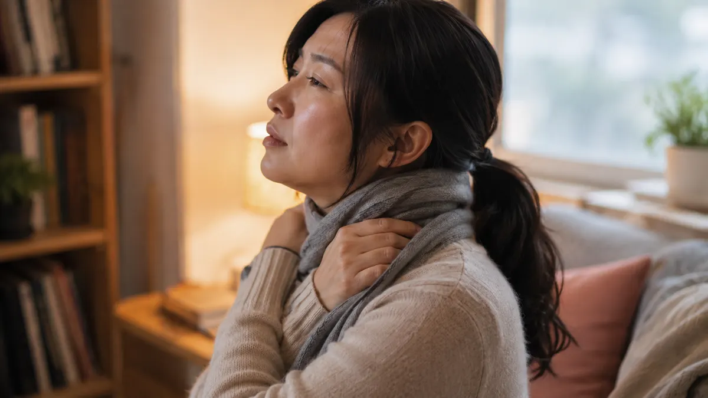

感冒臥床後覺得僵硬，怎麼慢慢回到日常活動？

躺了幾天，終於有力氣掀開被子。走到廚房倒水時，腳步比平常沉。你不想一直躺著，也不確定今天還能做多少。
病後起身覺得僵硬，可以先看症狀是否整體好轉，以及日常活動後有沒有不適。躺、坐、站時身體的支撐不同，重新站立和走動可能覺得比較費力。可先回到能負擔的日常活動；若發燒再起、症狀惡化、胸痛或呼吸困難，應先停止並尋求適當醫療協助。
感冒後什麼時候可以開始回到日常？
呼吸道感染期間，仍發燒或症狀沒有整體好轉時先休息。CDC 的公共衛生指引以症狀改善且至少 24 小時未發燒、也未使用退燒藥作為恢復一般活動的條件，回到人群後仍需留意防傳染。這是一般活動與防傳染指引，運動或上課須另外考量當天狀態。若有呼吸困難或胸痛，請立即尋求醫療協助。 CDC 呼吸道感染資訊。
👆 手機版可左右滑動
| 目前狀況 | 先做什麼 | 下一步界線 |
|---|---|---|
| 仍發燒或症狀未整體好轉 | 先休息、留意症狀變化。 | 避免趕著回課堂或恢復運動。 |
| 已漸恢復一般活動 | 由能負擔的活動開始，安排休息。 | 可做家中日常活動，不等於準備好上課。 |
| 活動後症狀回來或加劇 | 停止並尋求適當醫療評估。 | 有胸痛或呼吸困難時立即求助。 |
回到一般活動後，怎麼知道今天先做多少？
先從自己能負擔的日常活動開始，例如到家中另一處拿水或整理桌面。若恢復活動後症狀再起或變重，暫停並尋求適當評估。若已能回到工位，只想提醒自己換位置，可看怎麼安排中斷久坐的提醒。已恢復一般活動、想認識平日有輔具支撐的練習，再讀修復瑜伽介紹。
常見問題
臥床幾天就需要照一套固定復原步驟嗎？
恢復情形因病況和個人而異；可先看能否回到一般日常，依醫療建議調整。
症狀好轉就可以立即恢復原本的課嗎？
回到一般活動和回到原本的運動強度需要分開考量。仍不舒服或不確定時先詢問醫療專業人員。
先記下最有感的日常時刻
已漸回到一般日常、想整理活動感受時再使用掃描。若症狀回來或加劇，先處理病況。
約 2 分鐘，免登入、免加 LINE。做完可用 3 天觀察卡整理日常感受。
開始免費 2 分鐘體態訊號掃描 →延伸閱讀 恢復上班後，看看怎麼提醒自己換姿勢